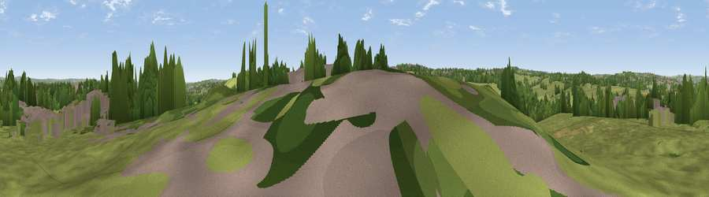

Viewpoint near Gildersome
#36265 in England · top 70% of its area beats it · near GildersomeThe view, rendered

A 360° render of this exact spot computed from the terrain model, tree cover and land cover — summer colours, afternoon light, calibrated against photographs of famous viewpoints. Real trees, hedges and buildings will differ in detail.
The panorama
Grey silhouette: terrain skyline in each direction (720 bearings, Earth curvature and refraction included). Dashed green: skyline with trees (+15 m) and buildings (+8 m) as obstacles. Blue strip: how far the ground is visible on each bearing.
Where the view opens
Wedge length = distance to the farthest visible ground on that bearing (vegetation-aware). Rings at 10, 25 and 50 km.
What fills the view
55% grassland · 25% woodland · 16% built-up · 5% cropland
Angular shares of the visible panorama (visual magnitude), not map area. Landscape diversity 0.48 (0–1 Shannon).
Key numbers
More beautiful places nearby
The staircase of upgrades: each row has a higher view potential than everything closer. Driving times are estimates from straight-line distance, calibrated against real road routing — check an actual route before setting out.
| Place | Direction | Drive | Score |
|---|---|---|---|
| Viewpoint near Gildersome | ESE · 1 km | ~3 min | 50.6 |
| Westgate Hill | W · 4 km | ~9 min | 52.1 |
| Viewpoint near Pudsey | NW · 5 km | ~10 min | 52.2 |
| Viewpoint near Woodkirk | SSE · 5 km | ~11 min | 62.1 |
| Rawdon Trig point | N · 10 km | ~19 min | 69.6 |
| Rawdon Billing | NNW · 10 km | ~19 min | 73.0 |
| Viewpoint near Otley | NNW · 15 km | ~26 min | 77.5 |
| Viewpoint near East Witton | N · 56 km | ~77 min | 77.8 |
53.76693, -1.64080 · source: screening · position refined by local search. Computed location — check access rights before visiting.